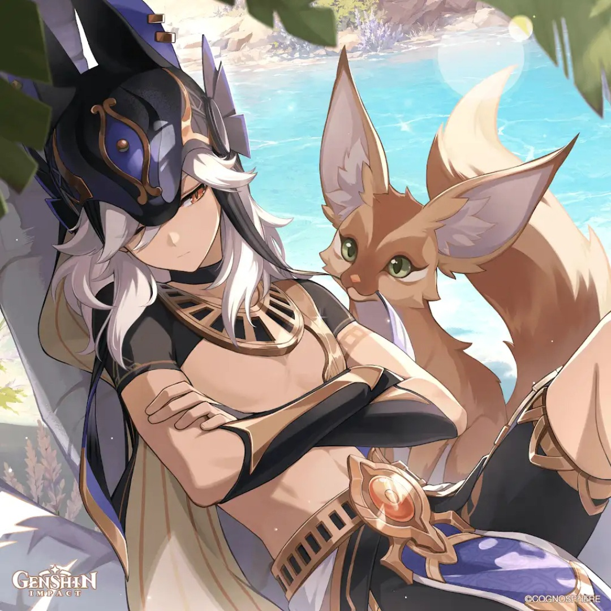

SANDS
EM / ATK%
GOBLET
Electro DMG%
CIRCLET
CRIT Rate / DMG

In Version 7.0, Cyno achieves SS-Tier standing primarily as a premier rapid-fire Stellar-Conduct driver alongside Sandrone and Odette. His high attack speed and split ATK/EM scaling allow him to continuously trigger the new 7.0 reactions. Additionally, his compatibility with the upcoming Lunar-Charged archetype (Columbina + Ineffa) broadens his team versatility beyond legacy Dendro setups.
His Burst converts attacks into Pactsworn Pathclearer normal strikes which scale strictly off Burst talent levels. Base Normal Attack talent does not scale burst damage.
| Stat Metric | Target Threshold | Justification |
|---|---|---|
| ATK | 1,800+ | Scales naturally through Scarlet Sands EM-to-ATK conversion. |
| Elemental Mastery | 300 ~ 500 | Essential main stat on Sands. Directly boosts Conduct & Aggravate. |
| Energy Recharge | 130% ~ 150% | Non-negotiable gate. Must achieve 100% burst readiness off cooldown. |
| CRIT Rate | 60% ~ 70%+ | High multi-hit attack strings demand dependable CRIT consistency. |
| CRIT DMG | 175%+ | Stack CRIT DMG on circlet and sub-stats once ER/EM are secured. |
Substat Priority: CRIT DMG > CRIT Rate > ER% (to 140%) > EM > ATK%
 Cyno
Main Driver
Cyno
Main Driver
Cyno drives high-frequency Electro hits under Odette's aura while Sandrone/Qiqi facilitate continuous Cryo application for massive Stellar-Conduct procs.
Cyno
Main Driver
Cyno functions as the primary high-uptime driver for Lunar-Charged reactions alongside Columbina and Ineffa with hydro-facilitated electro-charged cascades.
Cyno
Main Driver
 Baizhu
Baizhu
 Zhongli
Zhongli
Classic double-Electro quicken core. Fischl generates continuous Electro particles while Nahida and Baizhu maximize EM buffs and defensive shielding.
| Tier | Name | Rating | Combat Mechanics & Pull Value |
|---|---|---|---|
| C1 | Ordinance: Unceasing Vigil | ★★★★★ (SS-TIER SPIKE) | After using Burst, Normal ATK SPD increases by 20% for 10s. Triggering Judication during Skill refreshes this duration, maintaining permanent +20% ATK SPD throughout his burst. |
| C2 | Ceremony: Homecoming of Spirits | ★★★★★ | Normal attacks grant +10% Electro DMG Bonus for 4s (stacks up to 5 times for a total of +50% Electro DMG). |
| C3 | Precept: Lawful Enforcer | ★★☆☆ | Increases Elemental Burst (Sacred Rite: Wolf's Swiftness) Level by 3. |
| C4 | Austerity: Forbidding Guard | ★★★★☆ | Triggering Electro reactions during burst restores 3 Energy to all other party members (up to 5 times / 15 Energy total per burst). |
| C5 | Just Fasting | ★★☆☆ | Increases Elemental Skill (Secret Rite: Chasmic Soulfarer) Level by 3. |
| C6 | Raiment: Just Scales | ★★★★★ (WHALE) | Burst cast or Featherfall Judications grant 4 stacks of "Day of the Jackal." Normal attacks consume stacks to fire bonus Duststalker Bolts. |
Cyno cements his place in the Version 7.0 SS-Tier meta as a premier high-frequency Stellar-Conduct and Lunar-Charged driver. His split ATK/EM scaling converts the Disenchantment in Deep Shadows set into overwhelming reaction damage, while his C1 guarantees permanent +20% ATK Speed across his entire burst window.